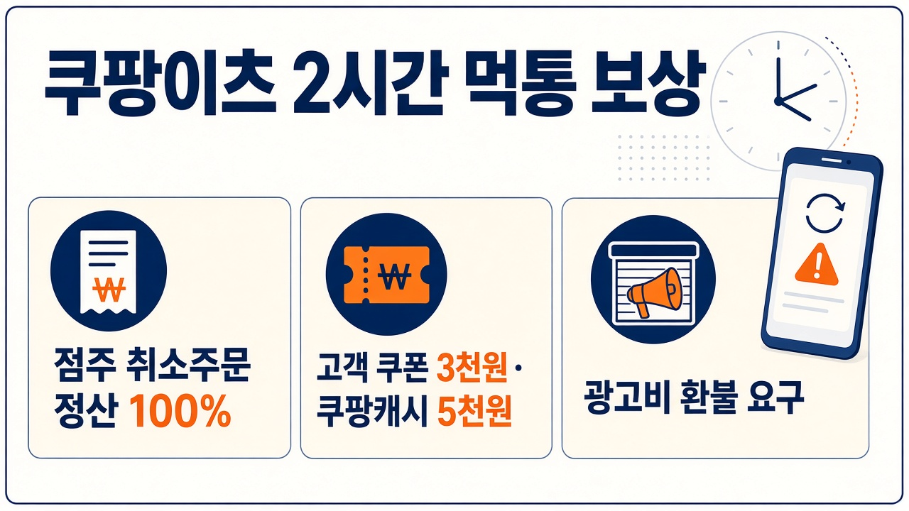
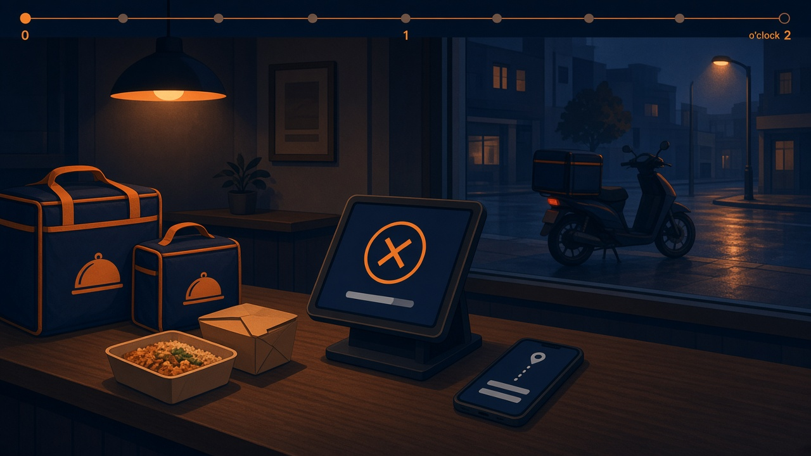
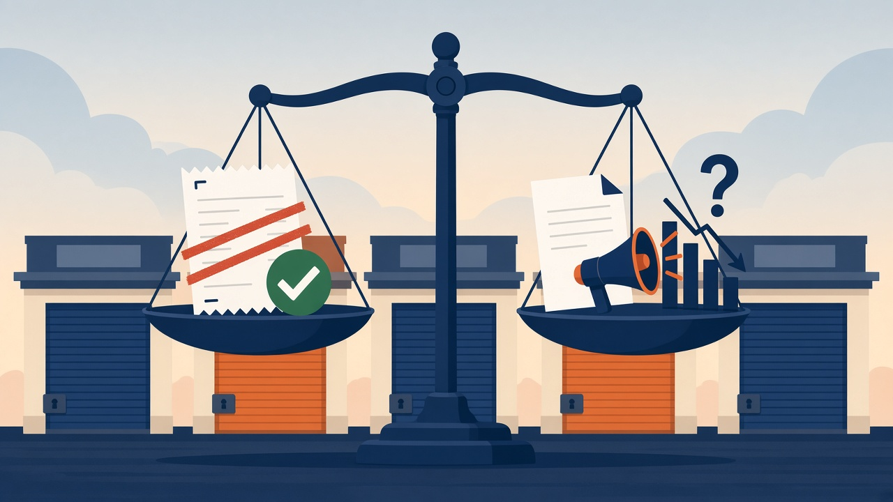

쿠팡이츠 2시간 먹통, 점주는 취소주문 100% 정산인데 소상공인은 왜 반발할까

지난 9일 새벽, 쿠팡이츠로 주문을 받다가 화면이 멈춰 당황하셨던 사장님 많으셨을 거예요. 배달을 기다리다 주문이 취소된 분들도 계셨고요. 그날 보상이 어떻게 정해졌는지, 무엇을 확인하면 되는지 차근차근 정리해 볼게요.
9일 새벽 2시간, 무슨 일이 있었나
10월 9일 0시께부터 2시간 넘게 쿠팡과 쿠팡이츠에 시스템 오류가 이어졌어요. 쿠팡이츠 배달 주문이 멈췄고, 쿠팡 쪽도 물류가 서면서 일부 주문 상품이 취소 처리됐습니다.
가게에서는 주문을 받아 놓고도 조리 완료 버튼이 눌리지 않는 일이 생겼어요. 라이더가 매장에 도착했는데 고객 주소를 확인할 수 없어 출발하지 못한 경우도 있었고요. 심야 배달 매출이 큰 가게라면 가장 바쁜 시간에 손이 묶인 셈입니다.
점주 보상, 취소주문은 정상 판매처럼 정산
쿠팡이츠는 장애 시간에 주문을 수락했다가 취소된 건을 정상 판매와 똑같이, 정산금 100%로 보상한다고 밝혔어요. 따로 신청하지 않아도 자동으로 정산되고, 이 취소 건에는 광고비도 붙지 않는다고 합니다.

여기서 기준은 수락한 뒤 취소된 주문이라는 점이에요. 다음 정산 내역에서 9일 새벽 취소 건이 정상 판매 금액으로 들어왔는지, 광고비가 빠졌는지 한 번 맞춰 보시면 좋겠어요. 내역이 다르면 쿠팡이츠 점주 고객센터에 해당 주문 번호로 문의하시면 됩니다.
고객 보상, 쿠폰 3천원과 쿠팡캐시 5천원
소비자 쪽 보상도 있어요. 쿠팡이츠에서 음식을 주문했다가 취소된 고객에게는 3천원 쿠폰이 나가고, 쿠팡에서 장애로 주문이 취소된 고객에게는 쿠팡캐시 5천원이 지급됩니다.
쿠팡캐시는 대상 고객에게 순차적으로 안내되고 있다고 해요. 그날 주문이 취소됐다면 앱 알림이나 쿠폰함, 캐시 내역을 확인해 보세요.
소상공인 단체가 더 넓은 보상을 요구하는 이유
소상공인연합회, 전국상인연합회, 한국외식업중앙회, 한국프랜차이즈산업협회, 전국카페사장협동조합 등 5개 단체는 11일 공동 성명을 냈어요. 이번 장애가 단순한 불편을 넘어 소상공인의 생존권을 위협했다는 거예요.

단체들이 짚은 건 보상 범위입니다. 수락 후 취소된 주문은 보상을 받지만, 장애 때문에 아예 들어오지 못한 주문, 그리고 광고와 프로모션에 돈을 쓰고도 놓친 판매 기회는 지금 보상안에 들어 있지 않아요. 그래서 영업 손실을 투명하게 산정하고 광고비 환불까지 포함한 보상안을 빨리 내놓으라고 요구하고 있습니다.
지금 확인할 것과 앞으로 지켜볼 점
10월 11일 기준으로 쿠팡 측이 추가 보상을 할지는 아직 발표되지 않았어요. 사장님은 자동 정산과 광고비 미부과가 제대로 반영됐는지 확인하고, 그날 주문 내역을 따로 챙겨 두시는 게 좋겠어요. 소비자는 쿠폰과 캐시가 지급됐는지 보시면 됩니다.
앞으로 지켜볼 건 단체들이 요구한 영업 손실 산정과 광고비 환불에 쿠팡이 어떻게 답하느냐예요. 배달앱 하나가 두 시간 멈췄을 때 그 손해를 누가 얼마나 떠안는지 보여 주는 사례가 될 것 같습니다.
참고한 기사: 연합뉴스 소상공인 손실보상 쿠팡이츠 취소주문 100% 보상(종합)(2026.10.11), 연합뉴스 소상공인 5개 단체, 쿠팡이츠 장애에 손실 산정하고 보상해야(2026.10.11), 헤럴드경제 2시간 먹통에 소상공인 손실 보상 요구…쿠팡이츠 취소 주문 정산(2026.10.11)
태그
쿠팡이츠 쿠팡이츠장애 쿠팡장애 쿠팡이츠보상 쿠팡캐시 배달앱 배달앱장애 소상공인 소상공인연합회 자영업자 배달플랫폼 광고비